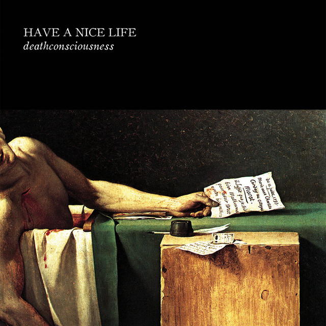

Have a Nice Life - Deathconsciousness



Información del álbum facilitada por discogs.com:
Fecha de lanzamiento: 2008
Géneros: Electronic, Rock
Estilos: Shoegaze, Post-Punk, Industrial, Experimental
Pais: US
Votos: Media de 4.43 con 7 votos
Sello: Columbia
Copyright (c): Sony Music Entertainment Inc.
Produced For: Sony Music Entertainment (Austria) GesmbH
Manufactured By: Columbia Records
Produced At: The Unique II Recording Suite
Mixed At: The Unique II Recording Suite
Mastered At: Sony Music Studios, New York City
Published By: No Ears Music
Published By: Streetwise Music
Published By: Buchu Music
Published By: Bug Music
Glass Mastered At: Sony Music, Pitman
Mastered By - Vlado Meller
Performer [Performed By] - Jade Davies
Photography By [Photo By] - Dieter Hasan
Producer - Unique II
Producer [Remixes Produced By] - Erwin Geppner
Producer [Remixes Produced By] - Werner Freistätter
Written-By - Greg Prestopino
Written-By - Matthew Wilder
Tracklist:
. The Plow That Broke The Plains
CD1-1. A Quick One Before The Eternal Worm Devours Connecticut 7:52
CD1-2. Bloodhail 5:40
CD1-3. The Big Gloom 8:06
CD1-4. Hunter 9:45
CD1-5. Telephony 4:38
CD1-6. Who Would Leave Their Son Out In The Sun? 5:19
CD1-7. There Is No Food 4:00
. The Future
CD2-1. Waiting For Black Metal Records To Come In The Mail 6:17
CD2-2. Holy Fucking Shit: 40,000 6:28
CD2-3. The Future 3:50
CD2-4. Deep, Deep 5:25
CD2-5. I Don’t Love 6:13
CD2-6. Earthmover 11:28